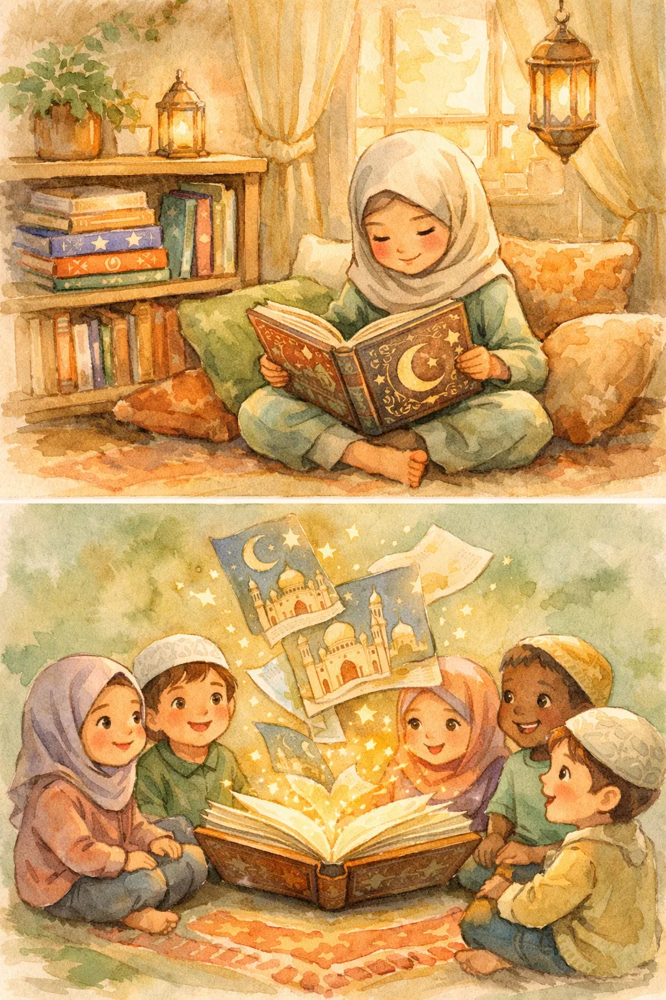
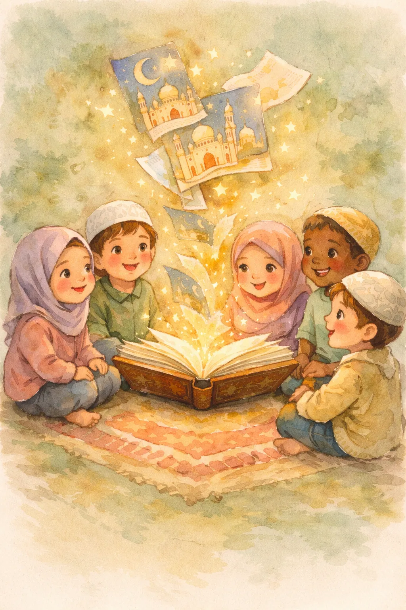

Islamic Books for Kids: The Ultimate Guide to Building a Muslim Library
The right books can shape how a child sees their faith — not as rules to memorize, but as a beautiful story they belong to. Here's how to build an Islamic library your kids will actually love.

There's a moment every Muslim parent knows. Your child picks up a random book from the shelf, flips through the pages, and asks: "Mama, is this about us?" They're looking for themselves in stories. Looking for characters who pray like they do, who say Bismillah before eating, who celebrate Eid instead of Christmas. And too often, they don't find them.
That's what makes Islamic books for kids so powerful. They don't just teach — they mirror. They tell your child: "You belong. Your faith is beautiful. Your stories are worth telling." And when a child grows up surrounded by books that reflect their identity, something profound happens. Islam stops being "the thing we do on Fridays" and becomes the air they breathe.
Whether you're starting from scratch or adding to an existing collection, this guide will help you choose the best Islamic story books for kids — organized by age, by category, and by the moments in life when your child needs them most.
Why Islamic Books Matter More Than You Think
Let's be honest: we live in a world that constantly tells our kids someone else's story. TV shows, school curricula, library shelves — the default is secular Western narratives. There's nothing wrong with those stories, but if they're all your child reads, they start to feel like their own story is the exception, not the norm.
Islamic books for kids fix that imbalance. They do three things that no amount of weekend Islamic school can replicate:
- 📖They normalize faith. When a character in a picture book says "Alhamdulillah" after a good day, your child learns that faith isn't something you put on for special occasions — it's woven into everyday life.
- 🌙They build identity early. A 3-year-old who sees a hijabi character in their favorite book grows up knowing that Muslims are heroes too. That's identity formation happening at the deepest level.
- ❤️They create emotional connections to faith. A child who cries when Prophet Yusuf is thrown into the well has internalized patience and trust in Allah far more than one who memorized a hadith about sabr.
The research backs this up too. Children who are read to regularly develop stronger vocabularies, better empathy, and deeper connections to their cultural identity. Add Islamic content to that reading habit, and you're raising a child who loves both books and their deen. (If you're also looking for stories to tell rather than read, check out our guide to Islamic stories for kids.)
The Best Islamic Books for Kids by Age Group
Not all muslim children books are created equal. What captivates a toddler will bore an 8-year-old, and what inspires a tween will overwhelm a preschooler. Here's how to match the right books to the right age.
Ages 0–3: Board Books and First Words
At this age, it's not about comprehension — it's about association. Your baby is learning that books are warm, safe, and connected to your voice. Islamic board books introduce familiar concepts: the moon and stars (Allah's creation), "Bismillah" before eating, and the sound of Arabic letters.
What to look for:
- • Sturdy board pages that survive teething and throwing
- • Bold, high-contrast illustrations (babies respond to strong colors)
- • Simple words: "Allah made the sun. Allah made the moon. Allah made you."
- • Touch-and-feel or lift-the-flap elements to keep tiny hands engaged
Top picks: "My First Quran Words" board books, "A is for Allah" alphabet books, "Baby's First Eid" series, and any book that pairs Arabic letters with textures or sounds.
Ages 3–5: Picture Books and Simple Stories
This is the golden age of picture books. Your child can follow a simple narrative, identify with characters, and — crucially — they'll want the same book read 47 times in a row. Use that! The repetition cements the message.
What to look for:
- • Beautiful, full-page illustrations (this age judges books by their pictures, and they're right to)
- • Stories about sharing, kindness, honesty — Islamic values through action, not lecture
- • Characters who look like your child (hijab, kufi, diverse skin tones)
- • Simple prophet stories: Nuh and the animals, Ibrahim and the stars
Top picks: "The Proudest Blue" by Ibtihaj Muhammad, Learning Roots' "Seerah Series" for little ones, "Ramadan Moon" by Na'ima B. Robert, and simplified prophet stories for kids picture books.
Ages 5–8: Early Readers and Illustrated Chapter Books
Your child is reading now — or starting to. This is when Islamic story books for kids become truly transformative. They can follow multi-chapter narratives, understand cause and effect, and start asking "why" about everything (including faith).
What to look for:
- • Illustrated chapter books with 50-100 pages
- • Prophet stories with more detail and emotion (the full story of Yusuf, not just the highlights)
- • Books about Islamic manners, daily duas with transliterations, and "what to say when…" guides
- • Adventure stories featuring Muslim protagonists
Top picks: "My First Quran Storybook" (Goodword), "Muslim Superheroes" series, "Omar and Hana" books, and dua/prayer guides designed for early readers.
Ages 8–12: Independent Readers and Deeper Dives
This is the age where kids form opinions about everything — including whether Islam is "cool" or "boring." The right books make all the difference. At this stage, your child is ready for Islamic history, biographies of Muslim scientists and scholars, and fiction that features Muslim characters navigating real-world situations.
What to look for:
- • Middle-grade novels with Muslim protagonists (representation matters enormously at this age)
- • Islamic history and heritage books: the golden age of Islam, Muslim inventors, explorers
- • Detailed seerah (life of Prophet Muhammad ﷺ) written for young readers
- • Books that address identity questions: being Muslim at school, fitting in while standing out
Top picks: "The Golden Age of Islam" illustrated histories, "Amira's Picture Day" and other #OwnVoices Muslim fiction, "Great Muslim Philosophers and Scientists" series, and age-appropriate seerah collections.

7 Categories Every Muslim Kids' Library Needs
Instead of buying randomly, think of your child's Islamic library as having sections — like a bookshop. Here are the seven categories that cover the full spectrum of faith-based reading.
1. Prophet Stories and Seerah
The backbone of any Islamic library. These books bring the prophets to life — not as distant historical figures, but as real people your child can admire and learn from. Start with simplified versions for young children and graduate to detailed retellings. The stories of Prophet Yusuf, Prophet Ibrahim, Prophet Musa, and Prophet Muhammad ﷺ should be in every Muslim home. (Need storytelling ideas? Our prophet stories for kids guide has ten great ones.)
2. Quran Stories and Tafsir for Kids
These books retell the narratives found in the Quran in child-friendly language: the People of the Cave, the story of the Elephant, Sulaiman and the ants. The best ones include the actual Quranic verses alongside the retelling, so children start connecting stories to the source. For bedtime reading, our collection of Quran stories for kids is a wonderful place to start.
3. Daily Dua and Prayer Books
Practical, everyday faith. Books that teach the dua for waking up, eating, entering the bathroom, seeing the new moon. The best ones use illustrations and transliterations so children can actually learn and say the words. Pair these with our guide on teaching kids salah for a complete worship foundation.
4. Islamic Manners and Character Books
Akhlaq (character) is half of Islam. Books about honesty, generosity, patience, gratitude, and kindness — rooted in Islamic teachings — help children understand that being a good Muslim means being a good human. Look for books that show characters demonstrating these values through stories rather than just listing rules.
5. Ramadan, Eid, and Celebration Books
Every child deserves to feel that their holidays are special. Ramadan countdown books, Eid morning stories, and Hajj adventure tales make Islamic celebrations feel as exciting as any other holiday. These books are especially powerful for Muslim kids in non-Muslim-majority countries where their celebrations aren't reflected in the culture around them. (For activity ideas, see our Ramadan activities for kids guide.)
6. Muslim Heritage and History
Did you know Muslims invented algebra, built the first hospitals, and mapped the stars? Most kids don't — because school textbooks skip that chapter. Books about the Islamic golden age, Muslim inventors like Al-Khwarizmi and Ibn Sina, and the architectural wonders of Islamic civilization give children pride in their heritage and answers when classmates ask "what have Muslims ever done?"
7. Fiction Featuring Muslim Characters
Not every book in a Muslim child's library needs to be "about Islam." Sometimes the most powerful representation is a detective story where the main character happens to wear hijab, or a sports novel where the hero prays Maghrib before the big game. These books normalize Muslim identity in everyday settings — which is exactly what children need to see.
How to Buy Islamic Story Books: A Parent's Checklist
The market for muslim children books has exploded in recent years — which is wonderful, but it also means quality varies wildly. Here's how to separate the gems from the filler.
🔍 The 5-Point Quality Check
- 1.Illustrations matter. Children's books live or die by their art. Beautiful, diverse illustrations signal a publisher who cares. Clip-art-quality images signal the opposite.
- 2.Check the theology. Not all Islamic books are created with equal scholarly care. Look for books reviewed or endorsed by Islamic scholars, or published by reputable Islamic publishers.
- 3.Read the reviews. Muslim parent communities on social media are excellent at flagging both gems and problems. A quick search of the title + "review" saves you from buying low-quality books.
- 4.Representation check. Do the characters reflect the global Muslim community? The ummah is beautifully diverse — Black, Arab, South Asian, Southeast Asian, convert families. Good books reflect that.
- 5.The "read it again" test. Borrow before you buy when possible. If your child asks for the book again the next night, buy two copies — one for the shelf and one for the car.
Beyond Books: Digital Islamic Stories for Kids
Physical books are irreplaceable — but let's be realistic. Kids today are digital natives. Rather than fighting screens, smart parents use them strategically. Islamic story apps, audiobooks, and interactive Quran apps can complement your physical library in powerful ways.
Apps like Islamic Stories for Kids offer beautifully illustrated, interactive retellings of Quran stories and prophet tales that children can explore on their own. The advantage? They combine visual storytelling with audio narration, making them perfect for car rides, waiting rooms, and those moments when you need 15 minutes to cook dinner in peace.
📱 Looking for interactive Islamic stories?
Our app brings Quran stories and prophet tales to life with beautiful illustrations and gentle narration — perfect for young Muslims ages 3-10.
Explore the App →Building a Reading Habit: Practical Tips
Buying the books is the easy part. Getting your kids to actually read them? That takes a bit of strategy. Here's what works:
- 🌙Make it a bedtime ritual. One Islamic story every night before sleep. No negotiation, no screens. This single habit will expose your child to hundreds of Islamic stories by the time they're 10.
- 📚Keep books at child height. If Islamic books are on the top shelf while Marvel comics are on the floor, guess which ones get read? Put Islamic books where little hands can grab them independently.
- 🎁Gift books on Islamic occasions. Eid gifts, Ramadan countdown presents, "you finished a juz" rewards — make books the default gift. Your child will start associating Islamic celebrations with the joy of a new story.
- 👨👩👧👦Read together, even when they can read alone. Shared reading builds connection. A 9-year-old who reads independently still benefits enormously from a parent reading to them — it's about relationship, not literacy.
- 🔄Rotate the collection. Put half the books away and swap them every month. "New" old books are just as exciting as actually new ones — and re-reading deepens comprehension.
Where to Find Islamic Story Books
The best places to find quality Islamic books for kids:
- Specialized Islamic bookshops — both online and in your local mosque community. These curate quality and often have staff who can recommend by age.
- Amazon — search "islamic books for kids" and filter by ratings. The selection is enormous, but use the quality checklist above.
- Muslim-owned indie publishers — Kube Publishing, Learning Roots, Prolance, Shade 7 Publishing, and Ruqaya's Bookshelf all produce excellent work.
- Library requests — many public libraries will order Islamic children's books if you request them. This also benefits other Muslim families in your community.
- Book swaps — organize one at your mosque. One family's finished books become another family's treasures.
Start Small, Start Now
You don't need to build a 200-book Islamic library overnight. Start with five books. One prophet story collection, one dua book, one Ramadan story, one Islamic manners book, and one piece of fiction with a Muslim protagonist. Read one every night. In a month, you'll have gone through the rotation six times — and your child will know those stories by heart.
Then add one or two books per month. By this time next year, you'll have a library that rivals any Islamic school's collection — and more importantly, a child who sees Islam not as something they have to learn, but as a world of beautiful stories they get to explore.
Because that's really what Islamic books for kids do. They don't just teach Islam. They make Islam feel like home.
📚 Keep Reading
- Islamic Stories for Kids: The Best Stories to Share with Your Children
- Prophet Stories for Kids: 10 Inspiring Tales Every Muslim Child Should Know
- 7 Beautiful Quran Stories to Tell Your Kids at Bedtime
- How to Make Salah a Habit for Your Kids (Without the Fight)
- Ramadan Activities for Kids: 15 Ways to Make It Special